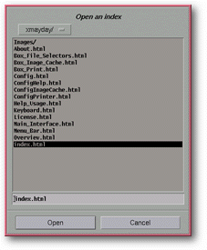

<!-- Documentation XMayday (c)1996-2000 AXENE contact axene@axene.org>
<html>

<head>
<title>File Selectors</title>
</head>

<body BGCOLOR="#FFFFFF" BACKGROUND="Images/back.gif" TEXT="#000000">

<p ALIGN="right"> </p>

<p><br>
<br>
A file selector chooses the file to be read or write. All file selectors function in the
same manner. <br>
<br>
</p>

<hr>

<p align="center"><br>
 <br>
<small><i>Screen shot: Typical file selector </i></small></p>

<p><br>
</p>

<hr>

<p><br>
</p>
<a NAME="file_selector">

<h3>Common elements of file selectors:</h3>
</a>

<ul>
  <li><a NAME="title_label">A <b>title</b> indicates the file selector's name.</a><br>
    &nbsp;</li>
  <li><a NAME="sub_directories_list">A roll-down menu allows the user to rapidly <b>switch
    back between previous directories and the current one</b>. This menu contains all
    sub-directories of a specific branch of the current directory all the way back to the root
    directory of that branch. </a><br>
    &nbsp;</li>
  <li><a NAME="file_list">The next list shows all the <b>sub-directories and files contained
    in the current directory</b>. Directory names listed in alphabetical order appear at the
    beginning of the list with the &quot;/&quot; character at the end of each name.
    Corresponding filenames with an eventual filter are displayed next. Double clicking on a
    directory name opens that directory; the current directory name is added to the roll-down
    menu and the selected directory becomes the new current directory, with its contents
    displayed in the list. A single click on a filename causes this name to appear in the text
    field below. Double clicking on a filename selects that file without other confirmation. </a><br>
    &nbsp;</li>
  <li><a NAME="file_name_textfield">The text field <b>displays the filename</b> selected in
    the menu and allows entry of a new title. A complete filename with routing can be entered.
    If &quot;~&quot; is entered and validated, the root of this account will become the new
    current directory; however, if the filename is followed by the &quot;/&quot; character,
    the current directory will point towards the new destination. In certain file selectors an
    extension is added to the filename automatically upon validation. </a><br>
    &nbsp;</li>
  <li><a NAME="left_button">The left button of the lower portion of a file selector <b>accepts
    a filename</b> to be opened, then closes the box. </a><br>
    &nbsp;</li>
  <li><a NAME="button_cancel">The <i>&quot;Cancel&quot;</i> button on the right cancels the
    chosen action and <b>closes the window</b>. </a></li>
</ul>

<p><br>
</p>

<hr>
<a NAME="fs_open_index">

<h3>Open an Index:</h3>

<p>The <i>&quot;Open an index&quot;</i> file selector permits the user to open the index
page's file. To best utilize XMayday, this HTML page must contain an index or a
documentation's Table of Contents, with hypertext links to the other pages in the
documentation. Only files having the extensions <tt>&quot;.html&quot;</tt>, <tt>&quot;.htm&quot;</tt>,
<tt>&quot;.HTML&quot;</tt> or <tt>&quot;.HTM&quot;</tt> will appear in the file list. For
more information on the use of this file selector, see the instructions for a </a><a HREF="Box_File_Selectors.html#file_selector">standard file selector</a>. </p>

<p><br>
</p>

<hr>
<a NAME="fs_open_file">

<h3>Open a File:</h3>

<p>The <i>&quot;Open a File&quot;</i> file selector chooses the file containing the
selected HTML page. The page chosen by this file selector will appear in the navigation
section of the general interface. Only those files having the extension <tt>&quot;.html&quot;</tt>,
<tt>&quot;.htm&quot;</tt>, <tt>&quot;.HTML&quot;</tt> or <tt>&quot;.HTM&quot;</tt> will
appear in the file list. For more information on the use of this file selector, see the
instructions for a </a><a HREF="Box_File_Selectors.html#file_selector">standard file
selector</a>. </p>

<p><br>
</p>

<hr>
<a NAME="fs_print_in_file">

<h3>Print to a file:</h3>

<p>The <i>&quot;Print to a file&quot;</i> file selector selects the filename under which
the browser's HTML page specifications will be saved. This selector is summoned from the '</a><a HREF="Box_Print.html">Print</a>' dialog box when File is chosen as the printer. The
extension <tt>&quot;.ps&quot;</tt> is automatically added to the filename if Postscript is
the print format; the extension <tt>&quot;.txt&quot;</tt> is added for other formats. For
more information on the use of this file selector, see the instructions for a <a HREF="Box_File_Selectors.html#file_selector">standard file selector</a>. </p>

<p><br>
</p>

<hr>

<p ALIGN="right"></p>
</body>
</html>
